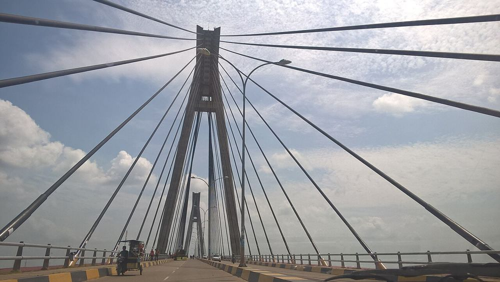
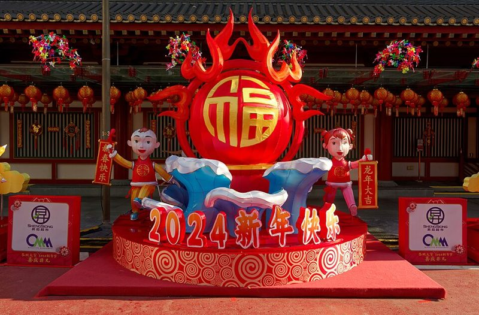
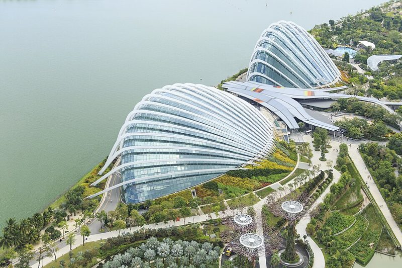
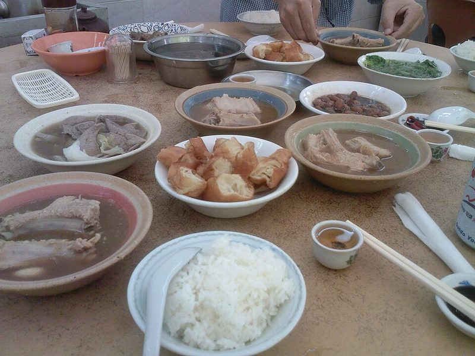
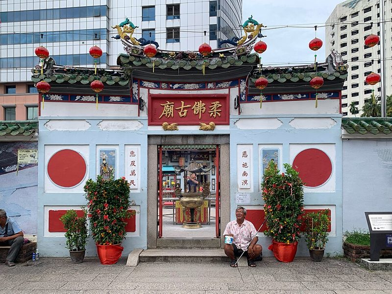
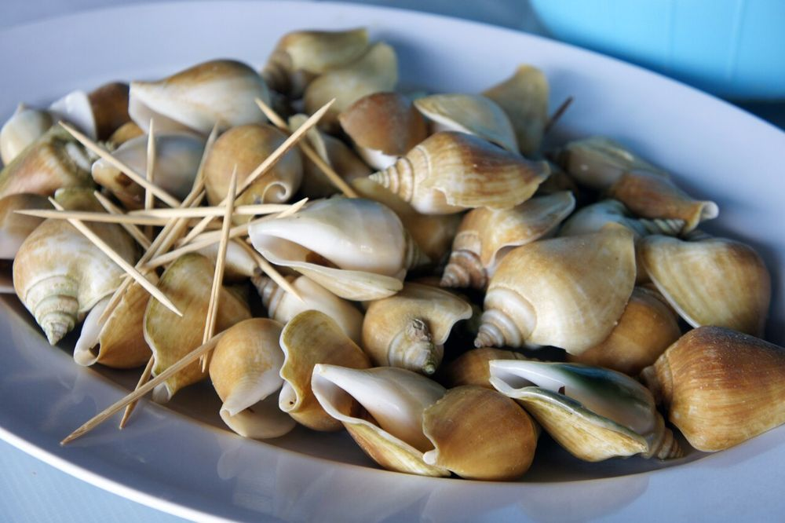
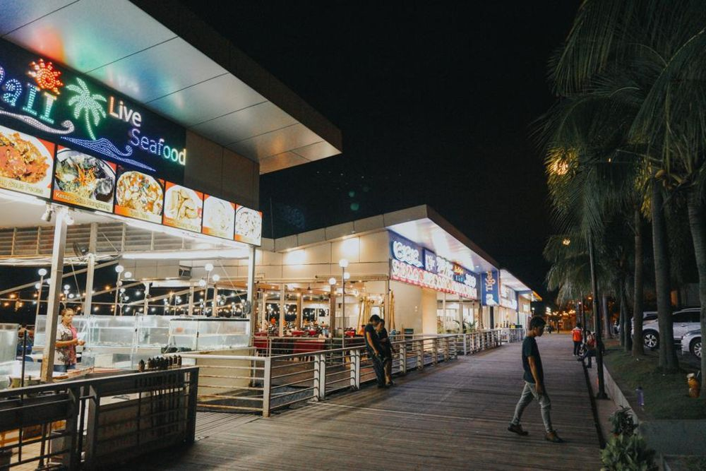
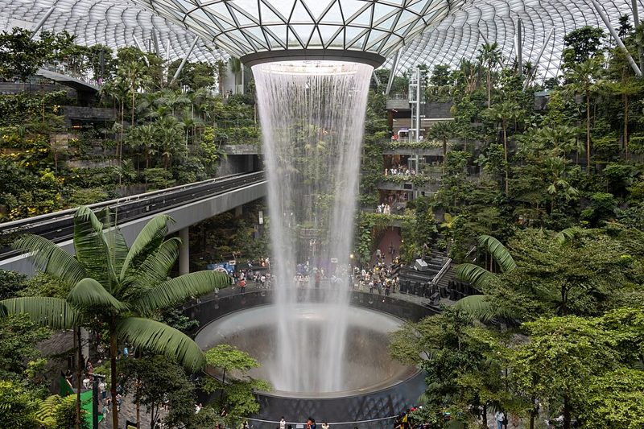

南洋家族走春・精美行程手冊
全家 10 人 · 新加坡會聚 · 新山圍爐 · 巴淡島海邊度假
我們 6 人（提夫家＋爸媽）先抵達新加坡自由行 2 晚，2/4（四）跨境到新山 Skudai 與姐夫一家會合團聚（新加坡到新山、新山用車由姐夫安排），一起除夕圍爐守歲。大年初一（2/6）全團 10 人搭渡輪渡海前往印尼巴淡島，住 Nongsa 的 Montigo 度假村放空 3 晚。最後提夫家與爸媽從 Nongsa 碼頭搭渡輪到新加坡 Tanah Merah 碼頭，再搭車到樟宜機場搭 15:45 長榮 BR216 返台，姐夫家渡輪返回新山。
每日時段精細行程
- 護照效期要超過入境日 6 個月；台灣護照新加坡、馬來西亞免簽。
- 入境卡都是線上免費填，入境前 3 天內：新加坡 SG Arrival Card、馬來西亞 MDAC；印尼要另外辦 e-VOA，並填 All Indonesia 入境申報。這幾張每個人都要填，小孩也要（可由大人代填），坐船進新加坡也要填 SG Arrival Card。只用官網，小心收費代辦假網站。
- 時差：新加坡、馬來西亞同台灣；巴淡島（印尼西部時間）慢 1 小時，船票時間都看當地時間。
- 貨幣：新幣 SGD、馬幣 MYR、印尼盾 IDR，三國都可刷卡，小攤販、計程車、小費備少量現金。三地都能用 Grab 叫車。
- 插座：新加坡、馬來西亞是英式三孔（G 型），印尼是歐式圓孔（C／F 型），帶萬用轉接頭。
- 2 月是新加坡一年最乾的月份（東北季風乾季），平均最低約 25°C、最高約 31.5°C，一個月約 9 天下雨，多是短暫陣雨：帶輕便雨具、防曬、防蚊液；室內冷氣強，帶薄外套。
- 2027 年除夕是 2/5（五）、初一是 2/6（六）。新加坡 2/6–2/8 放假；印尼 2/5 是集體休假、2/6 是國定假日。除夕到初三很多小吃攤、店家休息或縮短營業，名店出發前再查。印尼齋戒月預計 2/8 左右開始（官方還沒公告），巴淡島部分清真小吃白天可能不開。
- 網路：可買星、馬、印三國都能用的 eSIM 或當地 SIM 卡，出發前確認手機支援 eSIM。
- 緊急電話：新加坡報警 999、救護車 995；馬來西亞 999；印尼 112。台灣駐外急難電話：新加坡 +65 9638-9436（可用 WhatsApp）、馬來西亞 +60 19-656-9912、印尼 +62 811-984-676；聯絡不到時打外交部 +886-800-085-095。
- 新加坡嚴禁帶口香糖入境，香菸要申報；地鐵禁飲食、禁帶榴槤，罰款很重。
- 自來水可生飲，帶水壺；樟宜機場、Jewel 有免費 Wi-Fi。
- 牛車水新春燈飾晚上人多，小孩穿亮色衣服、約好走散集合點。
2.02週二 抵達新加坡 · 星耀樟宜瀑布 · 牛車水走春 6 人（提夫家＋爸媽）

-
中午12:05 抵達新加坡樟宜機場 → 入境提領行李
時段動線
- 05:25到桃園機場第二航廈長榮櫃台報到、托運行李（07:25 起飛，提早 2 小時到；6 人含 2 個小孩，預留時間）。
- 12:05長榮 BR225（07:25 桃園起飛，12:05 抵達樟宜 T3）。下機通關、領取行李並在航廈 ATM 提取或換匯新幣。
- 約 13:40步行前往與航廈相連之「星耀樟宜（Jewel Changi）」。地圖
- 交通
- 國際航班飛抵，航廈內步行連通星耀樟宜。
- 票號/預訂
- 已訂（11/10 易遊網，長榮 BR225 07:25→12:05，提夫家 4 人與爸媽共 6 人經濟艙，每人托運 2 件各 23 公斤、手提 1 件 7 公斤）。電子機票寄到提夫信箱，起飛前看長榮通知有無改時間。
-
下午星耀樟宜雨漩渦瀑布 → 前往新加坡市中豪亞飯店 Check-in
時段動線
- 13:45–14:45參觀 40 米高室內瀑布「雨漩渦（Rain Vortex）」與資生堂森林谷，輕鬆拍照休憩。
- 14:45–15:30於機場搭乘 Grab 6 人座（或叫 2 台計程車）前往新加坡市中豪亞飯店（Oasia Hotel Downtown）。車程約 20–25 分鐘。路線
- 15:30–16:30辦理入住（2 間房：爸媽＋11 歲、提夫＋xo＋4 歲），進房洗漱更衣、稍事歇息。
- 交通
- Grab 6 人座或 2 輛計程車（車資以現場叫車為準）。
- 票號/預訂
- 待預訂（Booking Genius 折扣 2 間 × 2 晚，含稅約 NT$33,317，共 4 張床）
-
晚上牛車水走春燈飾 · 年貨大街 · 麥士威熟食中心晚餐
時段動線
- 吃飯
- 牛車水麥士威熟食中心（天天海南雞飯、老伴豆花等，依現場點餐）。天天週一公休，營業到 20:00、19:30 最後點餐；過年前後攤位可能休假，出發前看店家公告。
- 交通
- 步行 6–8 分鐘或搭車（Tanjong Pagar ⇄ Maxwell/Chinatown），近在咫尺免舟車勞頓。
- 濱海灣花園冷室門票建議官網先買；冷室內偏涼，長輩帶外套。
- 雲霧林現在是「侏羅紀世界」展，有很大的音效和閃光，4 歲小孩會怕的話，大人陪著走或先看花穹。
- 夜間動物園晚上蚊子多、會下雨，穿包鞋、帶防蚊液；園內不能用閃光燈。
- 小販中心用面紙「佔位」是當地習慣，別坐有放東西的位子。
2.03週三 濱海灣花園冷室 · 午後飯店休憩 · 夜間水舞秀 6 人（提夫家＋爸媽）

-
上午濱海灣花園花穹（Flower Dome）與雲霧林（Cloud Forest）
-
中午濱海灣金沙商場午餐 → 回飯店午睡避暑
時段動線
- 12:15–13:45午餐：濱海灣金沙美食街（Rasapura Masters），在 B2，10:00–23:00，裡面有肉骨茶攤。順便逛金沙運河。地圖
- 14:00–16:30搭車返回 Oasia Hotel Downtown 休息，避開赤道正午烈日，孩子 27 樓高空泳池戲水或補眠。
- 吃飯
- 金沙購物商場美食廣場（依現場點餐）。
- 住宿
- Oasia Hotel Downtown（第 2 晚）
-
晚上濱海灣 Spectra 戶外光影水舞秀 ＋ 花園內晚餐
時段動線
- 吃飯
- Jurassic Nest 美食廣場（依現場點餐）。沙嗲灣已關閉，不要排進去。
- 備選
- 若投票改選夜間動物園（Night Safari），時段改為 18:30 前往萬態野生動物園（門票訂前再查，需提前訂票）。
- 新馬陸路過關過年前後車多，提早出發；護照放手邊，MDAC 先填好。
- 新加坡到新山、新山用車由姐夫安排；若自己開車，要帶國際駕照＋台灣駕照，靠左行駛；兒童安全座椅先跟姐夫確認。公路局（外交部提供）一覽表：台灣國際駕照在馬來西亞可以開車，要和台灣駕照一起帶；只帶台灣駕照不行。
- 新馬價差大，新幣換馬幣在新山換比較划算。
2.04週四 跨境前往新山（姐夫安排）· 姐夫家合流 · 入住 Hyatt Place 6 → 10 人全體會合

-
上午飯店 Check-out → 跨境到新山（姐夫安排）
時段動線
- 09:30–10:00Oasia Hotel Downtown 辦理退房，行李上車。
- 10:00–12:30新加坡到新山 Skudai：怎麼過去由姐夫安排（細節待姐夫）。過年前後關口車多，時間抓寬一點。路線
- 交通
- 由姐夫安排（細節待姐夫）。
- 證件
- 護照（效期 6 個月以上）、馬來西亞數位入境卡 MDAC（入境前 3 天內線上填報）。
-
下午與姐夫一家會合 · 入住 Hyatt Place Skudai
時段動線
- 12:30–13:30全家合流：於士古來（Skudai）與姐夫一家（乃瑜、卞＋7歲、5歲）熱鬧會面！於 Paradigm Mall 新山商場享用午餐。地圖
- 13:30–14:30新山 2/4–2/6 用車由姐夫安排（細節待姐夫）。
- 15:00入住 Hyatt Place Johor Bahru Paradigm Mall（2 間房，直通購物中心方便長輩幼童）。姐夫家住 Skudai 家中。
- 票號/預訂
- 待預訂（Booking 2 間 × 2 晚，含稅約 NT$22,970）
- 新山用車
- 由姐夫安排（細節待姐夫）。
-
晚上晚餐：亞彬養生肉骨茶 · 商場採買補給
時段動線
- 18:00–19:30晚餐：亞彬養生肉骨茶（Ah Peng Bak Kut Teh），品嚐砂煲濃郁當歸黑湯排骨、油條、胡椒豬肚湯與滷豬腳。地圖
- 19:30–21:00於 Paradigm Mall 超市買齊迎春水果、飲料零食與伴手禮。
- 吃飯
- 亞彬肉骨茶，砂煲肉骨茶晚餐（依現場點餐）。
- 交通
- 坐車前往（新山用車由姐夫安排）。亞彬在 Skudai 沒有分店，新山有 Taman Pelangi、Setia Indah、Bukit Indah 等店，去哪家、車程訂前再查。
- 除夕下午起很多店提早打烊，伴手禮與零食早點買。
- 發紅包（ang pao）用新鈔、偶數金額；避開 4。圍爐是家庭時間，到人家家裡帶個小禮（橘子成對）。
- 清真餐廳不能帶豬肉和酒進去。
2.05週五·除夕 華美早茶 · 柔佛古廟走春 · 全家除夕圍爐守歲 10 人全體

-
早上華美茶餐室老店南洋早餐（除夕時間訂前再查，要早去）
時段動線
- 08:15–08:45驅車前往陳旭年文化街區老城區。
- 08:45–10:00早餐：華美茶餐室（Restoran Hua Mui，1946 年老字號）。享用海南炭烤咖椰吐司、半熟蛋、海南雞扒與香濃白咖啡。地圖
- 吃飯
- 華美茶餐室（Jalan Trus 老店平日 08:00–17:00，官網）。除夕營業時間訂前再查，要早去。
- 交通
- Skudai 開車至新山市區約 20 分鐘。
-
晚上除夕年夜飯圍爐大團圓（10 人澎湃大餐）
時段動線
- 17:30–18:00全家梳洗打扮換上喜氣新衣，前往圍爐聚餐地點。
- 18:00–20:30全家圍爐年夜飯：享用南洋特色「七彩撈魚生（Lo Hei）」越撈越高發大財！長輩發紅包、三代同堂共享團圓大餐。
- 20:30 以後姐夫家客廳茶敘守歲，溫馨團圓，確認翌日渡海證件手續。
- 餐廳/地點
- 待定：姐夫家私宅圍爐 或 餐廳年菜（待全家決定）
- 票號/預訂
- 待預訂（12 月前由姐夫家預約年夜飯席位或盆菜）
- 建議搭 11:30（新山時間）船，10:30 前到碼頭辦出境；初一可能減班，前一天再跟船公司確認。新山沒有直達 Nongsa 的船，要在 Batam Centre 上岸再坐車。
- 到巴淡島先把手錶調慢 1 小時；碼頭外拉客計程車先講價，建議用 Grab／Gojek（要走出碼頭閘口 50–100 公尺上車）或請飯店付費接送。
- 印尼自來水不能生飲，刷牙也可用瓶裝水。
2.06週六·大年初一 初一拜年 · 11:30 渡輪到巴淡島 · 入住 Montigo 10 人全體
-
上午初一拜年 · 飯店 Check-out → Stulang Laut 碼頭出境
時段動線
- 08:00–09:45初一早上拜年，Hyatt Place 退房，行李上車。
- 10:00–10:30坐車到新山渡輪碼頭（Berjaya Waterfront Ferry Terminal / Stulang Laut）；送到碼頭、車子怎麼處理由姐夫安排（細節待姐夫）。地圖
- 10:30–11:15換取登船證、托運行李、通過馬來西亞海關出境查驗（開船前 1 小時到）。
- 交通
- 到碼頭由姐夫安排（細節待姐夫）。Stulang Laut → 巴淡島 Batam Centre 渡輪約 1.5 小時；新山沒有到 Nongsapura 的船（singaporeferry 11/11 查 2/6 無班，碼頭班表也沒有）。
- 船票
- 待預訂 建議 11:30（新山時間）開 → 12:00（印尼時間）到 Batam Centre，備案 14:30 開 → 15:00 到。singaporeferry.com 11/11 查 2/6 可訂，大人 S$26.73／人（10 人約 S$267），兒童價訂前再查。網站標 Dolphin Fast Ferry，碼頭班表把這班列給 Pintas，以訂票時為準。
- 簽證注意
- 全團 10 人需事先線上申辦印尼 e-VOA（每人 500,000 印尼盾，約 NT$900（11/10 匯率），可停留 30 天）
-
下午12:00 抵達巴淡島 Batam Centre → 午餐 → 坐車到 Montigo 入住
時段動線
- 12:00（印尼時間）11:30（新山時間）的船抵達印尼巴淡島 Batam Centre 碼頭（印尼時間比星馬台灣慢 1 小時），通關蓋章入境印尼。singaporeferry 2/6 可訂的船：08:30、11:30、14:30、17:30（新山時間）開，09:00、12:00、15:00、18:00（印尼時間）到（11/11 查）。
- 12:15–13:30在 Batam Centre 碼頭附近吃午餐（店家待定）。
- 13:30–14:00坐車到 Montigo（約 20 公里、約 25 分鐘，路況訂前再查）。10 人加行李要 2–3 台 6–7 人座：Montigo 免費接駁只到 Nongsapura 碼頭，從 Batam Centre 要付費接送（價格沒公布，入住前 72 小時跟飯店約），或叫 Grab／Gojek。到了先寄放行李。
- 15:00 起迎賓飲料，辦理別墅 Check-in 入住（Montigo 15:00 起入住、退房到 12:00，Booking 11/11 查），換上海島休閒裝備。
- 住宿（首選）
- 夢帝國度假村 Montigo Resorts Nongsa（3 棟獨立別墅：爸媽標準單臥室 Villa、提夫家與姐夫家各一棟豪華兩臥室山邊別墅）地圖
- 備選
- 巴淡島港灣萬豪酒店 Batam Marriott Hotel Harbour Bay（Booking 評分 9.2／359 則，11/10 查；5 星、無邊際泳池；市區飯店，不是海灘度假村（沒有海灘、兒童俱樂部，最近海灘 Ocarina 約 8 公里）；離 Harbour Bay 碼頭約 300 公尺；訂 4 間：爸媽＋11 歲／提夫＋xo＋4 歲／卞＋7 歲／乃瑜＋5 歲）地圖
- 票號/預訂
- 待預訂（Montigo 3 晚約 NT$128,672，Booking 11/6 實查；備選萬豪 4 間 3 晚 NT$92,048 不含早／NT$103,144 含早，2/3 前免費取消；價格訂前再查）
-
晚上初一迎春晚餐 · 飯店放鬆
時段動線
- 17:00–18:30漫步 Montigo 度假村私人白沙灘、泳池戲水（房型設施訂房時看）、賞落日晚霞。
- 18:30–20:30晚餐：飯店內餐廳（Montigo，訂房後確認餐廳）。
- 吃飯
- 飯店內餐廳（Montigo，訂房後確認餐廳）。
- 海邊紫外線很強，小孩戲水穿防曬衣、2 小時補擦防曬。
- 飛索有身高體重限制，現場先問；午後雷雨會暫停戶外設施。Sea Forest 旅遊網站寫週四到週一 09:00–17:00 開、週二三休，2/7 是週日，去前再打電話確認。
- 印尼多數是穆斯林，參觀清真寺穿長褲長袖，遞東西用右手。
2.07週日·初二 度假放空 · 泳池 · 海洋飛索探險 10 人全體

-
上午早餐 → 海灘、泳池、兒童俱樂部
時段動線
- 08:00–09:30飯店早餐（看訂的房價含不含早）。
- 09:30–11:30小朋友在度假村兒童俱樂部玩水活動；大人在泳池畔放空看書。
- 度假設施
- Montigo：私人沙灘、泳池（訂房時看房型）、健身中心、兒童俱樂部（TILO Kids Club，4–12 歲，每天 09:00–17:00，官網）。（備選萬豪：無邊際泳池、Spa、健身中心，沒有海灘、兒童俱樂部。）
- 交通
- 上午不用坐車；下午去 Sea Forest 要叫車。
-
下午Sea Forest Adventure 戶外探險公園（飛索/划艇）
時段動線
- 14:00–16:30前往 Sea Forest Adventure 體驗海灣飛索（Zipline）與水上設施。長輩可於綠蔭咖啡座觀賞。和 Montigo 都在 Nongsa 區，車程短（訂前再查）。地圖
- 活動費用
- 待定 依現場選購設施項目為準。
-
晚上晚餐 ＋ 飯店 SPA（待定）
時段動線
- 18:00–19:30晚餐：海風燒烤盛宴。享用炭火現烤海蝦、沙嗲、椰子布丁。
- 20:00–21:30預約傳統印尼草本精油 SPA 按摩，徹底卸下一年辛勞。
- 休閒
- 飯店 SPA 按摩（待定，需預約）。
- 海鮮餐廳先問秤重單價（每公斤）再點，結帳核對重量。
- 按摩店選有標價的店，貴重物品不離身；晚上回程用叫車 App。
- 印尼盾面額大（10 萬、5 萬），付錢數清楚零。
2.08週一·初三 慢活海島 · Harbour Bay 活海鮮大餐 · Nagoya 按摩 10 人全體

-
白天睡到自然醒 · 飯店慢時光 · 泳池戲水
時段動線
- 09:00–11:00慵懶晨起，無行程壓力。租借自行車漫遊林道、別墅客廳話家常。
- 12:00–13:30午餐在飯店簡單輕食。
-
下午出發市區 · Nagoya 商業中心泰式/印尼按摩舒壓
時段動線
- 15:00–15:45叫兩台 Grab 車前往巴淡島最熱鬧的 Nagoya 市區（從 Nongsa 約 35 分鐘，車程訂前再查）。
- 16:00–17:30前往市區體驗放鬆按摩（店家待定）。地圖
- 休閒費用
- 市區按摩（費用待定／去前再選）。
- 交通
- 叫車車資以現場為準。
-
晚上Harbour Bay 活海鮮澎湃晚宴（滿足老爸海鮮願望！）
時段動線
- 18:00–20:00晚餐：Harbour Bay 海鮮餐廳。直接水族箱現撈活海鮮，坐在海堤邊品嚐海味！地圖
- 20:15–21:00搭車返回 Montigo，整理行李準備翌日啟程。
- 吃飯
- Harbour Bay 海鮮晚餐（費用待定／依現場點餐）。
- 建議搭 09:30（印尼時間）Nongsa 開的船，08:30 前到碼頭（Batam Fast 規定開船前 30 分鐘要拿登船證到出境閘口），Montigo 有免費接駁到 Nongsapura 碼頭（約 5 分鐘，前一天跟櫃台約時間）；巴淡島出境後到新加坡要再填 SG Arrival Card。
- 船到新加坡後去樟宜機場搭 15:45 長榮 BR216，留至少 3 小時；行李上限看船公司規定。
- 剩下的印尼盾在當地花完，台灣很難換回。
2.09週二·初四 分頭啟程 · 渡輪到新加坡再搭車到機場返台 / 姐夫家渡輪回新山 分兩路返家

提夫家＋爸媽（6人）：直奔新加坡樟宜機場搭機返台。建議 Nongsa 09:30（印尼時間）船，約 12:00（新加坡時間）到樟宜，離已訂的長榮 BR216（15:45 起飛）約 3 小時 45 分。
姐夫一家（4人）：中午退房後坐車到 Batam Centre，建議搭 13:45（印尼時間）渡輪，16:15（新山時間）回到新山 Stulang Laut 碼頭。
-
上午Nongsa 09:30 渡輪到新加坡 · 姐夫家中午往 Batam Centre
時段與航線明細
- 08:15（印尼時間）提夫家＋爸媽 6 人坐 Montigo 免費接駁到 Nongsapura 碼頭（約 5 分鐘），08:30 前辦登船、出境。
- 09:30（印尼時間）Nongsa 碼頭開船（Batam Fast，航程 50 分鐘，S$39.60／人，6 人約 S$238，兒童價訂前再查）→ 11:20（新加坡時間）抵達 Tanah Merah 碼頭。入境後坐計程車約 10 分鐘（約 7.6 公里）到樟宜 T3，約 12:00 到機場。2/9 這條線每天 06:00、08:00、09:30、12:10、14:20、15:40、17:30、20:00（印尼時間）開（Batam Fast 11/1 起班表、singaporeferry 11/11 查）。備案 08:00 開 → 09:50 到；12:10 那班 14:00 才到，來不及。路線
- 備選（若改住萬豪）步行約 300 公尺到 Harbour Bay 碼頭，搭 Horizon Fast Ferry：07:15→09:05 或 08:30→10:20（巴淡時間開、新加坡時間到）抵達 HarbourFront，S$41.58 起；再搭車約 30 分鐘到樟宜機場。2/9、2/10 都有這兩班（singaporeferry 11/6、11/10 實查）。路線
- 姐夫家回程12:00 退房後坐車到 Batam Centre 碼頭（約 20 公里、約 25 分鐘，Grab 或飯店付費接送），12:45 前到；搭 13:45（印尼時間）渡輪，16:15（新山時間）到 Stulang Laut。備案 10:30 開 → 13:00 到。
- 交通
- 姐夫家：singaporeferry 2/9 可訂 07:30、10:30、13:45、17:00 開（印尼時間，標 Dolphin Fast Ferry），S$26.73／人（4 人約 S$107），11/11 查；Dolphin 官網另列 06:30、09:00、12:30、15:30，以訂票時為準。
- 票號/預訂
- 待預訂 提夫家與爸媽 6 張 Nongsa 09:30 → Tanah Merah 船票；姐夫家 4 張 Batam Centre 13:45 → Stulang Laut 船票。
-
下午樟宜機場 Check-in 登機 · 平安返抵台灣
時段動線
- 12:00–13:00樟宜機場 T3 預辦登機、托運行李、最後逛免稅店（班加旺蘇羅斑蘭蛋糕、TWG 茶葉）。
- 13:00–14:00享用機場午餐。
- 15:45長榮 BR216（樟宜 T3，15:45 起飛 → 20:15 抵桃園）。全家平安滿載美好回憶返家！
- 機票
- 已訂（11/10 易遊網，長榮 BR216，6 人）
2.10週三·初五 【備選方案】巴淡島多住 1 晚（住 4 晚才含此天） 9天8夜備選
若全家決定在巴淡島放鬆 4 晚（2/6–2/10），則 2/9 改為全天在飯店放鬆，Montigo 改訂 4 晚，2/10 一樣搭 Nongsa 09:30（印尼時間）船（備案 08:00）回新加坡搭機返台；singaporeferry 11/11 查 2/10 同樣 8 班、S$39.60。機票已訂 2/9 回，選這個方案要先改機票。
- 費用增額
- Montigo 4 晚總額 NT$160,557（較 3 晚多 NT$31,885）；備選萬豪 4 間 4 晚 NT$117,152 不含早／NT$131,948 含早（較 3 晚多 NT$25,104，不含早）。
- 機票配合
- 回程已訂 2/9 長榮 BR216；要改 2/10 得向易遊網改票（改期費每人 NT$1,400＋易遊網服務費 NT$500，另補價差稅差，改前再查）。
住宿精選一覽表
全程住宿與房型明細（含已查證房價）
| 日期/地點 | 飯店名稱 | 預訂房型與分房 | 訂房狀態/條件 | 總價 (含稅) |
|---|---|---|---|---|
| 2/2–2/4 新加坡 (2晚) |
Oasia Hotel Downtown, Singapore 丹戎巴葛站 Exit A 步行 1 分鐘，近牛車水 |
高級雙床客房 2 間（共 4 張床） ・爸媽＋11歲（雙床，小孩免費） ・提夫＋xo＋4歲（雙床，小孩免費） |
實查已核 Booking Genius 折扣 |
NT$ 33,317 |
| 2/4–2/6 新山 (2晚) |
Hyatt Place Johor Bahru Paradigm Mall 商場直通，近姐夫家 |
標準客房 2 間 ・爸媽 1 間 ・提夫家 1 間 （姐夫家住 Skudai 家） |
實查已核 Booking 免費取消 |
NT$ 22,970 |
| 2/6–2/9 巴淡島 (3晚) 首選 |
Montigo Resorts Nongsa 獨棟別墅（泳池等設施訂房時看房型） |
共 3 棟別墅 ・爸媽：標準單臥室別墅 (NT$34,798) ・提夫家：兩臥室山邊別墅 (NT$46,937) ・姐夫家：兩臥室山邊別墅 (NT$46,937) |
實查已核 Booking 免費取消 每位大人每晚約 NT$7,148 |
NT$ 128,672 |
| 2/6–2/9 巴淡島 (3晚) 備選 (市區高分) |
Batam Marriott Hotel Harbour Bay Booking 9.2 分・5 星・市區飯店（非海灘度假村） |
4 間 × 3 晚（每間 NT$23,012 不含早／NT$25,786 含早） | 實查已核（11/6） Booking 2/3 前免費取消 每位大人每晚約 NT$5,114（含早 5,730） |
NT$ 92,048 |
| 2/6–2/10 巴淡島 (4晚) 首選 (多玩1天，需改機票) |
Montigo Resorts Nongsa (4晚) | 3 棟別墅 × 4 晚（單臥室 NT$42,729 ＋ 兩臥室各 NT$58,914） | 每位大人每晚約 NT$6,690 | NT$ 160,557 |
| 2/6–2/10 巴淡島 (4晚) 備選 (多玩1天，需改機票) |
Batam Marriott Hotel Harbour Bay (4晚) | 4 間 × 4 晚（每間 NT$29,288 不含早／NT$32,987 含早） | 每位大人每晚約 NT$4,881（含早 5,498） | NT$ 117,152 |
預訂項目與票號確認清單
預訂項目追蹤清單（待辦 / 票號 / 期限）
| 項目類別 | 內容與航段 | 預訂平台/管道 | 狀態/票號欄位 | 備註期限 |
|---|---|---|---|---|
| 機票 | 長榮 BR225（2/2 去）/ BR216（2/9 回） 台北(TPE) ⇄ 新加坡(SIN)，6 人 |
易遊網 | 已訂（11/10） | 6 人含稅 NT$129,154；退票每人 NT$3,410＋服務費 NT$800；改期每人 NT$1,400＋服務費 NT$500，另補價差 |
| 新加坡飯店 | Oasia Hotel Downtown, Singapore (2/2–2/4 2晚) | Booking.com | 待預訂 | 免費取消（期限訂時看） |
| 新山飯店 | Hyatt Place JB Paradigm Mall (2/4–2/6 2晚) | Booking.com | 待預訂 | 享免費取消 |
| 巴淡島度假村 | Montigo Resorts Nongsa 3 棟別墅 (2/6–2/9；改 2/10 回要訂 4 晚) 備選：萬豪 Marriott Harbour Bay |
Booking.com | 待預訂 | 提夫 11/11 定 Montigo；房價訂前再查 |
| 新加坡到新山 | 新加坡飯店 → 馬來西亞新山 Skudai (2/4) | 由姐夫安排 | 由姐夫安排（細節待姐夫） | — |
| 新山用車 | 新山市區與 2/6 送到 Stulang Laut 碼頭 (2/4–2/6) | 由姐夫安排 | 由姐夫安排（細節待姐夫） | 若自己開車要帶台灣駕照＋國際駕照 |
| 新山渡輪 | Stulang Laut → 巴淡島 Batam Centre (2/6 11:30 新山時間開 → 12:00 印尼時間到) 10人 | singaporeferry.com | 待預訂 | 11/11 查：大人 S$26.73／人；備案 14:30 開；兒童價訂前再查 |
| 巴淡島返星渡輪 | Nongsa → Tanah Merah (2/9 09:30 印尼時間開 → 11:20 新加坡時間到) 6人 | singaporeferry.com 或 Batam Fast | 待預訂 | 11/11 查：S$39.60／人；備案 08:00 開 |
| 巴淡島返星渡輪（備選：改住萬豪才用） | Harbour Bay → HarbourFront（Horizon Fast Ferry，2/9 07:15 或 08:30）6人 | singaporeferry.com | 待預訂 | S$41.58 起/人，2/9、2/10 班次已實查 |
| 巴淡島返馬渡輪 | Batam Centre → Stulang Laut (2/9 13:45 印尼時間開 → 16:15 新山時間到) 姐夫家 4人 | singaporeferry.com | 待預訂 | 11/11 查：S$26.73／人；備案 10:30 開 |
| 印尼簽證 | 印尼電子落地簽證 e-VOA (全團 10人) | 印尼移民局官網 evisa.imigrasi.go.id | 出發前申辦（訂前再查） | 每人 Rp500,000（約 NT$900），線上刷卡直接核發 |
| 馬來西亞入境卡 | MDAC 數位入境卡 (全團 10人) | 馬來西亞移民局官網 MDAC | 出發前 3 天填寫 | 免費線上登記 |
| 除夕年夜飯 | 新山圍爐桌菜 (2/5 晚) | 餐廳包廂或姐夫家預約盆菜 | 待姐夫家敲定 | 除夕熱門，需提早 2 個月預約 |
總花費即時對照
住宿組合總計費用（首選 Montigo，萬豪備選）
| 方案組合 | 新加坡+新山 (4晚) | 巴淡島住宿費 | 全程住宿總計 (含稅) | 備註 |
|---|---|---|---|---|
| 首選 A1：Montigo 奢華別墅 3 晚 (8天7夜) | NT$ 56,287 | NT$ 128,672 | NT$ 184,959 | 提夫 11/11 定案；全家獨享獨立別墅（房型訂房時看） |
| 備選 B1：萬豪 Harbour Bay 3 晚 (8天7夜) | NT$ 56,287 | NT$ 92,048 | NT$ 148,335 | 評分 9.2；每大人每晚 NT$5,114，略超 5000（不含早）；含早總計 B1 NT$159,431 |
| 首選 A2：Montigo 奢華別墅 4 晚 (9天8夜) | NT$ 56,287 | NT$ 160,557 | NT$ 216,844 | 初五才回程，要改機票 |
| 備選 B2：萬豪 Harbour Bay 4 晚 (9天8夜) | NT$ 56,287 | NT$ 117,152 | NT$ 173,439 | 每大人每晚 NT$4,881，在 5000 內（不含早）；含早總計 B2 NT$188,235 |
* 機票已訂：長榮 6 人來回含稅 NT$129,154（11/10 易遊網），不在上表住宿合計內；改 2/10 回每人要付改期費 NT$1,400＋易遊網服務費 NT$500，另補價差。
* 說明：新加坡豪亞(NT$33,317)＋新山凱悅(NT$22,970)＝NT$56,287 固定基本住宿開銷。另外需估計：Nongsa 回新加坡船票 S$39.60／人（6 人約 S$238，11/11 查）；新山⇄巴淡島船票 singaporeferry 11/11 查 S$26.73／人（2/6 去 10 人約 S$267、2/9 姐夫家 4 人約 S$107）；兒童價訂前再查；Batam Centre 到 Montigo 的車資另計；印尼 e-VOA 每人約 NT$900；新加坡到新山、新山用車由姐夫安排。
* 飯店價格都是 11/6 前查的；11/10 再開 Booking 連結看不到房價，價格會變，訂前再查，以連結現價為準。